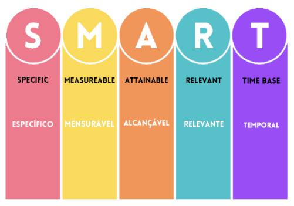

Indicadores de desempenho: conceito, finalidades, objetivos e metas
Introdução
Neste conteúdo, você aprenderá a criar, analisar e comunicar indicadores de desempenho, alinhando-os com os processos e as estratégias organizacionais. Essas ferramentas são fundamentais para monitorar e controlar a eficiência dos processos, sendo indispensáveis para profissionais técnicos em qualidade. Elas proporcionam uma visão clara do estado de uma organização, permitindo avaliar o progresso, embasar decisões, identificar tendências e comunicar-se de forma eficaz com colegas e gestores.
Entender esse assunto é crucial para o seu desenvolvimento profissional, pois os indicadores de desempenho são uma competência essencial para técnicos em qualidade. Eles fornecem uma base objetiva para a tomada de decisões, ajudam a identificar áreas de melhoria e garantem a qualidade dos produtos e serviços. Quando adequadamente empregados, têm o poder de motivar os indivíduos a alcançar seus objetivos, impulsionar melhorias contínuas e, consequentemente, fortalecer o sucesso global da organização.
No decorrer deste conhecimento, serão abordados distintos indicadores, começando com uma compreensão dos fundamentos dos indicadores de desempenho e outros elementos essenciais para sua aplicação eficaz.
Conceito
Os indicadores são instrumentos que contribuem para identificar, medir e descrever aspectos relacionados a um determinado fenômeno ou objeto da realidade que se deseja observar. A principal finalidade de um indicador é traduzir, de forma mensurável (quantitativamente) ou descritível (qualitativamente), um ou mais aspectos da realidade observada.
Os indicadores podem ser utilizados para guiar decisões importantes, monitorar resultados e servir de base para estratégias de melhoria. Em processos de gestão, os indicadores medem a diferença entre a situação pretendida (meta) e a situação atual (resultado).
Para entender como utilizar os indicadores de desempenho em uma organização, alguns conceitos devem ser levados em consideração. Você conhecerá um pouco mais sobre planejamento estratégico, missão, visão, objetivos, metas e métricas antes de serem abordados os indicadores de desempenho.
Ao pensar no planejamento estratégico de uma empresa, isto é, o ato de ajustar as habilidades e os recursos com as oportunidades de crescimento e mudanças que surgem no mercado, também se está pensando em definir objetivos para essa empresa. O objetivo do planejamento estratégico é dar forma aos negócios e produtos de uma empresa, de modo que eles possibilitem os lucros e o crescimento almejados.
Agora, você reverá alguns pontos importantes sobre missão, visão e objetivos organizacionais. Embora você já os tenha visto na unidade curricular Utilizar metodologias e ferramentas da qualidade nas organizações, são conceitos importantes quando se fala sobre indicadores.
A missão de uma empresa é o detalhamento da razão de ser da organização e o que ela pretende oferecer à sociedade por meio de um modelo de negócios viável. O objetivo de se formular uma declaração de missão é criar uma direção a ser seguida, deixando claras as metas e os objetivos da organização. Usualmente, as missões de empresas mais bem formuladas são aquelas inspiradas em uma visão de futuro.
Além da missão, é provável que você já tenha se deparado com a expressão “visão da empresa”. A visão é uma declaração que descreve as aspirações futuras da organização. Ela representa um conjunto de objetivos que a empresa pretende atingir a longo prazo, sendo um elemento crucial na definição da identidade e cultura organizacional. A visão corporativa guia as atividades da empresa e inspira os colaboradores em direção a um objetivo ou uma situação de longo prazo.
Agora que você já conhece os principais conceitos que envolvem os indicadores, conheça as suas finalidades.
Finalidades
A concepção de avaliar o desempenho remonta aos tempos antigos da civilização, mas foi na Revolução Industrial, com a complexidade crescente das operações comerciais, que esses indicadores começaram a ser organizados e adotados em larga escala. Ainda que não esteja explicitamente estabelecido quem introduziu a expressão “indicador de desempenho”, sabe-se que a ideia foi progressivamente modelada e ajustada por vários pensadores e administradores ao longo do século XX.
A essa altura, você deve estar se perguntando: quais são as finalidades dos indicadores de desempenho? Então, veja a seguir.
A primeira finalidade é mostrar a ocorrência ou a ausência de fatos relevantes dentro da gestão. Além disso, os indicadores têm a função de apontar o que está acontecendo de favorável ou desfavorável na condução para a realização dos objetivos para conquistar os resultados almejados.
Há uma frase de Deming, muito conhecida, que diz:
Não se gerencia o que não se mede, não se mede o que não se define, não se define o que não se entende, e não há sucesso no que não se gerencia (Deming apud Audy, 2016).
Basicamente, os indicadores de desempenho são definidos em duas dimensões: a dos resultados e a dos esforços. Quando se fala em dimensão dos resultados, deve-se observar a eficiência, isto é, a relação entre os insumos utilizados (entradas) e os produtos gerados (saídas). Também é necessário observar a eficácia, que é a quantidade e a qualidade do que foi entregue (resultado), e, por sua vez, a efetividade, isto é, o impacto gerado (efeitos).
Na dimensão dos esforços, o que se deve observar é a excelência, que é a conformidade com padrões de qualidade. A excelência é uma indicação se o bem ou serviço que está sendo oferecido pela empresa está de acordo com o que o cliente está buscando. Então, quando se fala em excelência, a opinião do cliente é o fator que será avaliado.
Outro ponto importante na dimensão dos esforços é a economicidade, isto é, o uso de recursos com o menor ônus possível. A economicidade está inserida na eficiência; no entanto, a economicidade trata de recursos financeiros, enquanto a eficiência trata de recursos de uma maneira ampla, como recursos materiais, financeiros e recursos humanos.
Ainda na dimensão dos esforços, há a execução, que é a realização dos processos conforme o que foi estabelecido. A execução demonstrará se a organização está colocando em prática o seu planejamento.
Após entender um pouco mais sobre as dimensões dos indicadores de desempenho, compreende-se que estes são instrumentos essenciais que auxiliam as organizações na gestão eficaz e na tomada de decisões. Os indicadores desempenham múltiplas funções, que são cruciais para a condução bem-sucedida das organizações.
Como exemplo, será utilizada a Estilo Plus, uma empresa fictícia que produz e comercializa roupas plus size, para compreender as finalidades dos indicadores de desempenho:
Mensuração do progresso
Os indicadores de desempenho são como um termômetro para as empresas. Eles ajudam a empresa a medir e acompanhar seu desempenho em relação às metas e aos objetivos que foram estabelecidos. Por exemplo, se a Estilo Plus estabeleceu uma meta de aumentar as vendas em 10% no próximo trimestre, um indicador de desempenho poderia ser as vendas realizadas a cada semana. Isso permitiria à empresa acompanhar seu progresso em direção à meta de vendas e fazer ajustes conforme necessário.
Tomada de decisão
Os indicadores de desempenho são como bússolas que guiam as empresas em suas decisões estratégicas e operacionais. Eles fornecem dados concretos que ajudam a empresa a tomar decisões informadas. Por exemplo, se um indicador de desempenho da Estilo Plus mostra que as vendas on-line estão superando as vendas na loja física, a empresa pode decidir investir mais em marketing digital e melhorar a experiência de compra on-line para seus clientes. Assim, os indicadores de desempenho ajudam a Estilo Plus a tomar decisões baseadas em dados, em vez de suposições ou palpites.
Identificação de problemas
Os indicadores de desempenho funcionam como um sistema de alarme para as empresas. Eles sinalizam áreas que podem estar causando preocupação. Por exemplo, se um indicador de desempenho mostra que a taxa de devolução de produtos da Estilo Plus está aumentando, isso pode indicar um problema com a qualidade ou o ajuste das roupas. Com essa informação, a Estilo Plus pode intervir precocemente, investigar a causa do problema e tomar medidas para melhorar a qualidade de suas roupas. Assim, os indicadores de desempenho ajudam a empresa a identificar e resolver problemas antes que eles se tornem mais sérios.
Estímulo à melhoria contínua
Os indicadores de desempenho são como um motor de inovação para as empresas. Eles incentivam a empresa a buscar constantemente maneiras de melhorar seus processos, produtos e práticas. Por exemplo, se um indicador de desempenho mostra que a satisfação do cliente com a Estilo Plus está diminuindo, isso pode incentivar a empresa a revisar e melhorar seus processos de atendimento ao cliente. Ou, se um indicador mostra que uma determinada linha de roupas não está vendendo bem, a Estilo Plus pode ser incentivada a inovar e melhorar o design ou a qualidade dessa linha de produtos. Assim, os indicadores de desempenho ajudam a empresa a manter uma cultura de melhoria contínua.
Feedback e comunicação
Os indicadores de desempenho são como um motor de inovação para as empresas. Eles incentivam a empresa a buscar constantemente maneiras de melhorar seus processos, produtos e práticas. Por exemplo, se um indicador de desempenho mostra que a satisfação do cliente com a Estilo Plus está diminuindo, isso pode incentivar a empresa a revisar e melhorar seus processos de atendimento ao cliente. Ou, se um indicador mostra que uma determinada linha de roupas não está vendendo bem, a Estilo Plus pode ser incentivada a inovar e melhorar o design ou a qualidade dessa linha de produtos. Assim, os indicadores de desempenho ajudam a empresa a manter uma cultura de melhoria contínua.
Esses quadros de avisos são os painéis de gestão, também conhecidos como dashboards, que são ferramentas que apresentam uma interface gráfica para que os usuários vejam, de maneira visual e centralizada, os indicadores de desempenho e as métricas. Eles são uma maneira mais interativa e transparente de utilizar informações importantes para a tomada de decisões
Por exemplo, se um indicador de desempenho mostra que a Estilo Plus está atrasada em relação à meta de vendas trimestral, isso é comunicado a todos na empresa pelo painel de gestão. Isso permite que todos na Estilo Plus entendam a situação atual da empresa e o que precisa ser feito para alcançar a meta. Assim, os indicadores de desempenho ajudam a empresa a manter todos “na mesma página” e focados no mesmo objetivo.
Conforme é possível observar, os indicadores de desempenho atuam como pilares de sustentação para organizações que buscam excelência, orientando, medindo e fornecendo insights valiosos para a jornada rumo ao sucesso. No quadro, veja alguns exemplos de como é possível criar indicadores de desempenho para realizar avaliações em distintas áreas:
Finanças |
|
Recursos Humanos |
|
Marketing |
|
Produção |
|
Fonte: Senac EAD (2024)
Finanças |
Recursos Humanos |
Marketing |
Produção |
|
Índice de ganhos financeiros Índices de clientes inadimplentes Redução de custos fixos Redução de custos variáveis |
Índice de absenteísmo Nível de satisfação dos colaboradores Índice de acidentes no trabalho |
Nível de atendimento de pedidos Índice de participação no mercado Satisfação dos clientes |
Produtividade Nível de qualidade do produto Desperdício de matéria-prima |
Fonte: Senac EAD (2024)
Objetivos e metas
Os objetivos são aspirações a serem alcançadas, são condições que a empresa não tem hoje, mas que se propõe a buscar no futuro. Ao descrever objetivos, é importante observar que estes iniciarão sempre com um verbo no infinitivo, como “ampliar”, “conquistar”, “expandir”, “aumentar”, “diminuir”, entre outros. Por exemplo, uma empresa que produz e comercializa roupas plus size tem como objetivo aumentar suas vendas.
É muito importante não confundir objetivos com metas. Enquanto o objetivo é qualitativo, isto é, uma qualidade que a empresa busca atingir, a meta é uma quantidade relacionada a esse objetivo, algo mensurável, ou seja, “o quanto”. Por exemplo, a empresa que produz e comercializa roupas plus size quer aumentar suas vendas (objetivo) em 10% no próximo trimestre (meta).
Embora objetivos e metas sejam utilizados como sinônimos no dia a dia, durante o curso Técnico em Qualidade e, posteriormente, no desenvolvimento das atividades profissionais, essa diferença deverá ser observada.
Então, o objetivo é onde se pretende chegar, enquanto a meta é quanto se quer progredir com esse objetivo, o que se pretende atingir com uma noção de prazo. E você? Sabe como criar metas eficientes, específicas, mensuráveis, atingíveis, relevantes e com um recorte de tempo?
Aprenda, no vídeo, a criar metas inteligentes utilizando o método SMART (específico, mensurável, alcançável, relevante e temporal):
Aprenda a criar metas inteligentes utilizando o método SMART (específico, mensurável, alcançável, relevante e temporal):
ESPERA VIDEO
Conseguir definir bem as suas metas é fundamental para qualquer tipo de organização. Apesar de parecer simples, definir metas precisa de muito cuidado e planejamento, pois qualquer meta traçada de forma errada pode gerar muita dor de cabeça, prejuízo e frustrações.
Então, entenda agora como definir metas valiosas e reais, de um jeito eficiente, por meio do método SMART. Com certeza fará toda a diferença e trará bons resultados para você e sua empresa.
Para deixar bem claro como definir metas do jeito certo e que realmente funcione, aqui será explicado tudo sobre as metas SMART de um jeito bem prático e com exemplos, mostrando os seguintes pontos:
- O que são as metas SMART
- Como defini-las
- Três dicas para usar as metas SMART de um jeito simples
-
O que é método SMART?
Trata-se de um método para definir metas coerentes e eficientes. O método estabelece critérios para definição de objetivos, seja para o perfil empresarial, seja pessoal. O método funciona como uma espécie de checklist em que cada meta é avaliada para verificar se tem todos os requisitos para atingir os resultados esperados ou desejados.
O método tem o nome SMART porque cada letra representa um dos atributos que serão avaliados nas definições das metas e dos objetivos: S de specifc (específico), M de measureable (mensurável), A de attainable (alcançável), R de relevant (relevante) e T de time base (temporal).
Método SMART
Fonte: Senac EAD (2024)Se você seguir e respeitar essas diretrizes, será possível definir suas metas de um jeito inteligente e esperto, que é justamente o significado, em português, do termo em inglês smart.
Agora, veja cada um desses atributos para deixar bem claro as metas SMART.
-
Como definir as metas SMART
S de ESPECÍFICA
Este é o primeiro passo para se definir uma meta. Ela precisa ser bem específica, e isso significa que o resultado a ser alcançado precisa ser bem direto, nada subjetivo. Além disso, todos os envolvidos precisam ter bem claro o entendimento sobre do que se trata a meta. Por exemplo, definir uma meta de aumentar as vendas de uma empresa é uma meta bem subjetiva, mas aumentar as metas em 10% é algo bem mais específico.
-
Como exemplo, será utilizada a empresa fictícia Estilo Plus, fundada em 2015, que produz e comercializa roupas femininas e masculinas de tamanhos diferenciados, denominados plus size. A empresa tem cinco lojas físicas, realiza vendas virtuais, conta com 300 colaboradores e pretende aumentar suas vendas em 10%.
Levando esse exemplo em consideração, veja agora os pontos que precisam ser respondidos para que a meta seja específica, conforme já mencionado, lembrando que cada pergunta será respondida de acordo com o objetivo do aumento das vendas em 10%.
PONTOS PARA UMA META SER ESPECÍFICA – Aumentar as vendas em 10%
O que será conquistado com essa meta? O aumento do faturamento da empresa em 10%, para investir na compra de novos equipamentos, que aumentarão a capacidade de produção da empresa em 20%.
Quem será(ão) o(s) responsável(is) pela meta? O departamento de vendas.
Onde a meta será realizada? Nas lojas físicas e on-line.
Como a meta será conquistada? Os gerentes de cada loja física e on-line serão bonificados caso a meta seja alcançada.
Por que a meta é tão importante? Porque incrementará o caixa financeiro da empresa para poder investir em novos equipamentos e, com isso, aumentar a capacidade produtiva da empresa.
Pontos para uma meta ser específica
Fonte: Senac EAD (2024)Com esses pontos, suas metas serão bem específicas e ajudarão muito nos outros pontos que serão abordados agora.
M de MENSURAVEL
Ter uma meta mensurável significa que você conseguirá acompanhar o progresso dela identificará se foi realmente alcançada. De nada adianta ter uma meta se não for possível saber o seu andamento ou se ela foi de fato atingida.
PONTOS PARA UMA META SER MENSURÁVEL – Aumentar as vendas em 10%
Qual é o resultado esperado com a meta? Aumentar as vendas em 10%.
Em quanto tempo esse resultado deverá ser alcançado? Em três meses.
Como esse resultado pode ser mensurado? Avaliando os resultados de vendas semanalmente.
Pontos para uma meta ser mensurável
Fonte: Senac EAD (2024)Ainda utilizando o exemplo da Estilo Plus, é possível verificar se a meta é atingível.
A de ATINGIVEL
Sua meta é realmente atingível, ou seja, possível de ser alcançada? Seja coerente e sensato ao definir uma meta, pois ela precisa ser realista, possível e viável de ser alcançada.
Considere a estrutura da equipe e o poder de investimento para saber se sua meta é atingível mesmo. Por exemplo, não adianta ter uma meta de dobrar suas vendas se você não tiver equipe e estrutura necessárias para isso; ou então ter a meta de fazer com que sua empresa tenha mais de 100 lojas em três meses se a empresa não tem nem receita para fazer isso acontecer.
Ter metas irreais resulta em frustrações e, certamente, desmotivará você e sua equipe, pois a sensação será a de que todo o trabalho foi em vão.
Por isso, para traçar suas metas atingíveis, veja as respostas para os pontos a seguir, ainda considerando o exemplo da Estilo Plus:
PONTOS PARA UMA META SER ALCANÇÁVEL – Aumentar as vendas em 10%
A empresa Estilo Plus tem capacidade para atingir a meta? Considerando a capacidade produtiva da empresa e motivando de uma boa maneira a equipe de vendas, sim, é viável atingir 10% de aumento de vendas.
A meta é financeiramente viável? Sim, a empresa não precisará aumentar significativamente seus investimentos para aumentar as vendas em 10%.
Em termos de histórico da empresa, é possível atingir a meta? Sim, a empresa tem um histórico de crescimento nas vendas e, com isso, a projeção de aumentá-las em 10% no próximo trimestre é totalmente atingível.
Pontos para uma meta ser alcançável
Fonte: Senac EAD (2024)Agora, é preciso analisar se a meta é relevante:
R de RELEVANTE
A meta definida é realmente importante e relevante para ser trabalhada? Embora pareça óbvio este ponto, muitas vezes as metas são traçadas sem ter grande relevância para a empresa.
É importante ter certeza de que a meta fará diferença quando for alcançada.
Lembre-se de que quanto mais importante e relevante for a meta, maior será a motivação de toda equipe para alcançá-la.
Seguindo o exemplo de aumentar em 10% as vendas da Estilo Plus, veja algumas perguntas para compreender a relevância da meta.
PONTOS PARA UMA META SER RELEVANTE – Aumentar as vendas em 10%
Como a empresa será impactada pela meta? Com o aumento de 10% nas vendas, será possível investir em equipamentos que aumentarão a produtividade da empresa em 20%.
A meta é vista como relevante por todos os envolvidos? Os gestores de todos os departamentos apresentarão a meta para todos os envolvidos, a fim de que fique claro que aumentar a capacidade de produção é essencial para o crescimento da empresa.
O momento é oportuno para ir em busca da meta? Sim, o mercado está em crescimento e a empresa está cada vez mais sólida para poder crescer.
Há prioridades que podem ser prejudicadas por essa meta? Não, a empresa está seguindo o planejamento estratégico traçado anteriormente. Essa meta é prioridade da empresa.
Pontos para uma meta ser relevante
Fonte: Senac EAD (2024)Agora, é preciso avaliar os aspectos relativos ao tempo e ao cumprimento da meta:
T DE TEMPORAL
Aqui é importante entender em quanto tempo a meta precisa ser alcançada e avaliar se esse prazo é realmente condizente e possível de ser cumprido. Tenha em mente que prazos irreais são os principais pontos para fazer com que as metas não sejam cumpridas. Por isso, entenda profundamente se seus prazos são coerentes com a realidade e faça um cronograma bem planejado.
Com as perguntas a serem respondidas de acordo com o exemplo da Estilo Plus, tem-se os seguintes pontos:
PONTOS PARA UMA META SER TEMPORAL – Aumentar as vendas em 10%
Existe um cronograma bem definido e planejado? Sim, foi feito um cronograma com todas as datas apontadas e com cada responsável por cada tarefa.
Todos os envolvidos foram consultados sobre o prazo desse cronograma? Sim, o cronograma foi feito de maneira conjunta entre todos os envolvidos.
Qual é a data final para a meta ser alcançada? Daqui três meses.
Pontos para uma meta ser temporal
Fonte: Senac EAD (2024)Você viu até aqui os pontos das metas SMART. Considerando o exemplo da Estilo Plus, é possível definir a meta da seguinte maneira:
A equipe de vendas da Estilo Plus aumentará os resultados de vendas em 10% em três meses. Com o resultado alcançado, a empresa terá capital para investir em novos equipamentos, o que aumentará a capacidade produtiva da empresa em 20%. Esse índice fará com que a Estilo Plus cresça ainda mais e se consolide no mercado de roupas estilo plus size, motivando, assim, todos os envolvidos da empresa.
Você reparou que todos os pontos listados foram abordados na construção da meta? Percebeu como a meta fica bem clara, objetiva e realista? Essa é a vantagem de utilizar as metas SMART.
-
-
Três dicas para usar as metas SMART de um jeito simples
Por fim, veja aqui três dicas bem simples e que certamente farão toda a diferença em seu planejamento:
- Acompanhe o desenvolvimento de cada ação: é essencial monitorar o desempenho de todas as tarefas a serem realizadas. Dessa maneira, será possível entender se todos os requisitos estão sendo cumpridos e se todos estão caminhando para a direção planejada de uma maneira organizada e coerente.
- Mantenha todos os responsáveis envolvidos: certifique-se de que todos os envolvidos estejam motivados em cumprir o que foi planejado. Delegue as responsabilidades para cada membro da equipe e garanta que todos entenderam a importância de alcançar a meta.
- Mostre o resultado alcançado: quando a meta for atingida, mostre a todos os envolvidos e valorize o trabalho e os esforços de cada um. Isso é muito importante e justo, para que todos se sintam valorizados.
Com base no que você viu aqui, é possível concluir que ter metas específicas, mensuráveis, alcançáveis, relevantes e temporais é de extrema importância para o desenvolvimento de qualquer atividade em uma empresa. Aliado a isso, um plano de ação para alcançar suas metas é fundamental – lembre-se disso.
Sempre que precisar definir metas, retome este conteúdo.
Após compreender como criar metas bem definidas, conclui-se que não basta ter objetivos e metas para que os processos sejam bem gerenciáveis. Ainda é necessário entender como medir as metas elaboradas para acompanhar se elas serão alcançadas.
Após assistir ao vídeo e compreender como criar metas bem definidas, conclui-se que não basta ter objetivos e metas para que os processos sejam bem gerenciáveis. Ainda é necessário entender como medir as metas elaboradas para acompanhar se elas serão alcançadas.
Nesse sentido, é necessário ter indicadores de desempenho para acompanhar a(s) meta(s), isto é, quais serão as fontes de dados para identificar se a meta está sendo alcançada ou não. Logo, quando as metas são associadas aos indicadores, pode-se acompanhar o desempenho da meta proposta.
Para tanto, utilizam-se as métricas, que são os dados brutos. Elas podem ser representadas por valores numéricos, ou não, e são utilizadas para mensurar o desempenho geral de determinada estratégia ou processo. Geralmente, as métricas são utilizadas para identificar tendências e projetar cenários, orientando as tomadas de decisão da gestão.
Por sua vez, os indicadores de desempenho são ferramentas que derivam das métricas e ajudam o gestor a ter uma compreensão mais aprofundada sobre os dados brutos obtidos por tais métricas. Ou seja, os indicadores representam os desdobramentos das métricas. Eles possibilitam fazer avaliações mais minuciosas sobre o que elas estão mostrando.
Logo, os indicadores de desempenho são medidas qualitativas ou quantitativas que mostram o estado de uma operação, de um processo ou sistema. Os indicadores de desempenho mostram a comparação do que foi realizado em relação a uma expectativa ou um objetivo.
Ainda utilizando o exemplo da Estilo Plus, que pretende aumentar suas vendas em 10% no próximo trimestre, é possível visualizar, na prática, como empregar os conceitos de objetivo, meta, métrica e indicador de desempenho:
Fonte: Senac EAD (2024)
Fonte: Senac EAD (2024)
Nesse exemplo, o objetivo é o que a Estilo Plus quer alcançar – aumentar suas vendas. A meta é um objetivo mais específico e mensurável que contribui para o objetivo geral – um aumento de 10% nas vendas no próximo trimestre. A métrica é a medida que será usada para avaliar o progresso em direção à meta – o valor total das vendas. Finalmente, o indicador de desempenho é a medida específica que será usada para avaliar o desempenho – o percentual de aumento nas vendas.
Outro conceito que deve ser bem compreendido, antes de entender um pouco mais sobre indicadores de desempenho, é o de processos. Relembrando o que foi estudado na unidade curricular Mapear processos das organizações, processos organizacionais têm como propósito principal aumentar a eficiência e eficácia da organização, ou seja, ajudar a empresa a alcançar seus objetivos estratégicos de forma mais rápida, com menor custo e com maior qualidade. Esses processos consistem em um conjunto de atividades sequenciais que ajudam uma organização a atingir suas metas e seus objetivos de forma eficiente e eficaz.
Agora que você recordou esses conceitos fundamentais, está preparado para iniciar a próxima etapa, a qual trata dos tipos de indicadores de desempenho.
Tipos de indicadores de desempenho
Agora você conhecerá os tipos de indicadores de desempenho e compreenderá suas aplicações. Com esse conhecimento, você se capacita a selecionar as métricas mais apropriadas para atender às necessidades específicas do contexto, enfatizando a importância dessas ferramentas na busca incessante pela melhoria contínua e pelo sucesso empresarial.
Para ilustrar cada tipo de indicador, serão apresentados exemplos vinculados à empresa Estilo Plus, que, como você já viu, destaca-se na produção de roupas estilo plus size. Esses exemplos ajudarão a visualizar como os indicadores de desempenho são aplicados na prática e como contribuem para o aprimoramento dos processos e resultados da organização.
Indicador de eficiência
A eficiência é definida pela habilidade de maximizar a produção com o uso mínimo de recursos. Por exemplo, na Estilo Plus, a eficiência pode ser avaliada pela quantidade de roupas produzidas por metro de tecido utilizado. Se a empresa frequentemente precisa refazer peças ou descarta muitos tecidos, provavelmente sua eficiência está abaixo do ideal.
Um indicador comumente utilizado para medir a eficiência é o overall equipment effectiveness (OEE), ou eficiência global dos equipamentos, um conceito introduzido por Seiichi Nakajima (1989). Esse indicador é calculado somando todas as perdas, planejadas ou não, que ocorrem durante o processo de produção. No caso da empresa de roupas plus size, essas perdas podem incluir tecidos descartados, tempo de inatividade de máquinas de costura ou peças defeituosas que precisam ser refeitas.
O cálculo do OEE leva em consideração três fatores principais: disponibilidade, desempenho e qualidade. Em relação à empresa Estilo Plus, a disponibilidade refere-se ao tempo em que as máquinas de costura estão realmente funcionando em comparação com o tempo total disponível. O desempenho avalia quantas peças são produzidas por hora em relação à capacidade máxima das máquinas. Já a qualidade analisa quantas peças atendem aos padrões de qualidade em comparação com o total de peças produzidas. Um alto OEE indica que a empresa está produzindo de forma eficiente, com poucas perdas, e que as máquinas estão operando com alta disponibilidade e alto desempenho e produzindo produtos de qualidade.
Indicador de eficácia
A eficácia é um conceito que se refere à capacidade de uma organização atingir seus objetivos. Um indicador-chave de eficácia é a rentabilidade geral. Esse indicador mede o lucro obtido em relação ao volume total de produtos vendidos. Em outras palavras, ele quantifica quanto lucro a Estilo Plus está obtendo para cada peça de roupa plus size que vende.
O cálculo da rentabilidade geral é feito dividindo o lucro total obtido pela quantidade total de produtos vendidos. Por exemplo, se a Estilo Plus vendeu mil peças de roupa em um mês e obteve um lucro de R$ 20 mil, a rentabilidade geral seria de R$ 20 por peça (R$ 20 mil dividido por mil).
Portanto, quanto maior a rentabilidade geral, mais eficaz é a Estilo Plus em atingir seus objetivos financeiros. Isso significa que a empresa está não apenas vendendo suas roupas plus size, mas também gerando um lucro saudável com essas vendas. Isso é um sinal de sucesso para a organização.
Indicador de capacidade
O indicador de capacidade é uma ferramenta essencial para o planejamento e a gestão da produção. Por exemplo, a Estilo Plus pode usar o indicador de capacidade para avaliar quantas peças de roupa ela consegue produzir ou entregar em um mês. Isso ajuda a empresa a entender se tem recursos suficientes para atender à demanda dos clientes.
Além disso, o indicador de capacidade também pode ser usado para avaliar a alocação e a disponibilidade da equipe. A Estilo Plus pode usar esse indicador para garantir que sua equipe de costureiras esteja sendo usada de maneira eficiente, sem sobrecarga ou ociosidade.
O monitoramento do indicador de capacidade, por meio do planejamento de capacidade, é crucial para a empresa. Isso garante que as entregas sejam feitas com pontualidade e qualidade, melhora a produtividade, proporciona segurança ao gestor para a tomada de decisões e previne a sobrecarga ou ociosidade da equipe. Assim, a Estilo Plus pode continuar fornecendo roupas plus size de alta qualidade para seus clientes.
Indicador de produtividade
O indicador de produtividade é uma ferramenta essencial para medir a eficiência do uso dos recursos disponíveis. Por exemplo, na Estilo Plus, Ana e Márcia são responsáveis pela produção de camisetas. Se você considerar que ambas têm as mesmas condições de trabalho (mesmo tempo, mesmo investimento, mesmo número de colaboradores, entre outros), é possível comparar a quantidade de camisetas que cada uma produz por turno para avaliar sua produtividade.
Se Ana produz 10 camisetas por turno e Márcia produz 20 camisetas no mesmo período, é possível dizer que Márcia é mais produtiva que Ana. Isso significa que Márcia está utilizando os recursos disponíveis de maneira mais eficiente.
Portanto, o indicador de produtividade é uma ferramenta valiosa para a Estilo Plus, pois permite que a empresa identifique oportunidades de melhoria, aumente a eficiência e, finalmente, atenda melhor aos seus clientes.
Indicador de conformidade
Essa é uma ferramenta essencial para medir a qualidade dos produtos. Por exemplo, se a Estilo Plus produz 100 peças de roupa em um mês e 95 dessas peças atendem aos padrões de qualidade da empresa, então o indicador de conformidade seria de 95%. Isso é calculado dividindo o número de peças que atendem aos padrões (95) pelo número total de peças produzidas (100).
Esse indicador é crucial para a empresa, pois ajuda a entender a proporção de seus produtos que atendem aos critérios de qualidade estabelecidos. Isso permite que a empresa identifique áreas de melhoria, aumente a qualidade de seus produtos e, finalmente, atenda melhor aos seus clientes.
Indicador de lucratividade
Este indicador demonstra a proporção do lucro em relação ao valor total das vendas. A sua determinação é realizada por meio da divisão do lucro líquido pela receita total. Em outras palavras, ele quantifica a parcela do lucro obtido com base nas vendas totais realizadas.
Por exemplo, se a Estilo Plus vendeu R$ 100 mil em roupas em um mês e obteve um lucro líquido de R$ 20 mil, então a proporção do lucro em relação ao valor total das vendas seria de 20%. Isso é calculado dividindo o lucro líquido (R$ 20 mil) pela receita total (R$ 100 mil).
Esse indicador é importante para a Estilo Plus, pois ajuda a entender a eficiência de suas operações. Isso permite que a empresa identifique áreas de melhoria, aumente a eficiência de suas operações e, finalmente, atenda melhor aos seus clientes. Além disso, também é possível ter uma visão clara do desempenho financeiro da empresa.
Indicador de rentabilidade
O indicador de rentabilidade é uma ferramenta essencial para medir o retorno sobre o investimento inicial. Por exemplo, se a Estilo Plus investiu R$ 100 mil para iniciar seu negócio e gerou um lucro de R$ 20 mil em um ano, então o indicador de rentabilidade seria de 20%. Isso é calculado dividindo o lucro (R$ 20 mil) pelo investimento inicial (R$ 100 mil).
Assim, a Estilo Plus passa a entender o retorno que está obtendo de seu investimento inicial. Isso permite que a empresa avalie a eficácia de suas estratégias de negócios e tome decisões informada sobre futuros investimentos. Além disso, também é possível ter uma visão clara do desempenho financeiro da empresa.
Indicador de competitividade
A competitividade de uma organização é avaliada em comparação com o mercado no qual ela atua. Um exemplo de indicador de competitividade é a participação de mercado, ou market share, que é calculado dividindo a porcentagem de participação da empresa pelo total do mercado.
Entenda isso com o seguinte exemplo: imagine que existem três principais varejistas no mercado de roupas plus size: Varejista A, Varejista B e Varejista C. Suponha que, em um determinado mês, foram vendidas 50 mil peças de roupas plus size no país, das quais 20 mil foram da Varejista A, 15 mil da Varejista B e 15 mil da Varejista C.
Nesse caso, é possível calcular a participação de mercado de cada varejista da seguinte maneira: a participação de mercado da Varejista A é de 40%, que é obtida dividindo 20 mil (número de peças vendidas por ela) por 50 mil (número total de peças vendidas); a participação de mercado da Varejista B é de 30%, que é obtida dividindo 15 mil (número de peças vendidas por ela) por 50 mil (número total de peças vendidas); e a participação de mercado da Varejista C é de 30%, idêntica à da Varejista B.
Portanto, a participação de mercado é uma medida útil para avaliar a competitividade de uma organização em relação ao seu mercado. Nesse exemplo, a Varejista A tem a maior participação de mercado e, portanto, é a mais competitiva entre as três varejistas no mercado de roupas plus size.
Indicador de efetividade
A efetividade é um conceito que se refere à capacidade de fazer as coisas certas da maneira correta. Em outras palavras, é a combinação da eficácia (fazer as coisas certas) e da eficiência (fazer as coisas de maneira correta) dos processos.
Ao pensar na Estilo Plus, o indicador de efetividade pode ser medido relacionando dois aspectos: a eficiência, que pode ser representada pela rapidez na produção e entrega das roupas, e a eficácia, que pode ser avaliada pelo nível de satisfação do cliente com a qualidade e o ajuste das roupas. Assim, um alto nível de efetividade seria alcançado quando as roupas são produzidas e entregues rapidamente (alta eficiência) e os clientes estão satisfeitos com a qualidade e o ajuste das roupas recebidas (alta eficácia).
Indicador de valor
Este indicador está associado à percepção do cliente sobre o valor de um produto ou serviço. A Estilo Plus pode ter um alto indicador de valor se, mesmo com preços mais elevados, seus produtos são escolhidos por muitos clientes. Isso pode ocorrer em razão de vários fatores, como a qualidade superior das roupas, o ajuste perfeito, o excelente atendimento ao cliente ou a reputação positiva da marca no mercado.
Consequentemente, mesmo com preços mais altos, a empresa pode obter um lucro maior em razão da preferência dos clientes por seus produtos. Portanto, o indicador de valor é uma medida importante da competitividade e do sucesso de uma empresa no mercado.
Encerramento
Você viu até aqui que o planejamento estratégico é um processo que alinha os objetivos, as habilidades e os recursos de uma empresa às oportunidades de crescimento e mudanças no mercado. Por sua vez, a missão da empresa é a razão de sua existência e o que ela oferece aos clientes. Já a visão é a aspiração futura da empresa, o que ela deseja alcançar. Juntos, o planejamento estratégico, a missão e a visão orientam a empresa em suas decisões e ações, garantindo que ela esteja alinhada com seus objetivos e suas metas.
Você também estudou as dimensões dos indicadores de desempenho, que se dividem em resultados e esforços. Viu, ainda, as finalidades dos indicadores, destacando a capacidade de fornecer dados concretos que embasam decisões estratégicas e operacionais.
Dentre as finalidades dos indicadores de desempenho, cita-se a capacidade de sinalizar áreas de preocupação, permitindo intervenções precoces, motivando a busca constante por aprimoramentos em processos, produtos e práticas que facilitam a comunicação interna.
Você viu, também, que um objetivo carece de uma meta para que se saiba o que medir. Por sua vez, uma meta necessita de métricas para que se saiba quanto medir. Com a utilização de indicadores de desempenho, é possível acompanhar a sua evolução. Os indicadores de desempenho podem ajudar a gestão a entender como a organização está funcionando.
Aqui, você descobriu que métricas e indicadores de desempenho são essenciais para ajustar estratégias e definir metas, mas eles não são a mesma coisa. Todo indicador é uma métrica, pois ambos fornecem dados e mensuram resultados. No entanto, nem toda métrica é um indicador. As métricas fornecem dados brutos, enquanto os indicadores, que são métricas que ganharam relevância estratégica, vão além do quantitativo e assumem uma análise mais profunda dos resultados.
Em resumo, as métricas representam algo mensurável, enquanto os indicadores usam essas métricas para fazer análises mais profundas dos resultados de uma estratégia específica.
Por fim, foram apresentados os tipos de indicadores de desempenho, para que se possa realizar a escolha de indicadores mais adequados para cada tipo de negócio ou situação, a depender dos objetivos, das metas estabelecidas e das particularidades de cada organização.
Agora, você, futuro técnico em qualidade, ao conhecer os indicadores de desempenho, poderá entender o cenário em que se inserirá e prever falhas. Você poderá tomar decisões mais certeiras para melhorar a qualidade dos processos e produtos. Em resumo, o conhecimento sobre indicadores de qualidade capacita o profissional a contribuir para a melhoria contínua da empresa e a garantir a satisfação dos clientes.
Múltipla escolha
Que tal exercitar o conteúdo que você estudou?
1) Analise os três contextos a seguir e, com base em seus estudos, marque a única opção que apresenta objetivo, meta, métrica e indicador de desempenho corretamente:
Correto! É a única opção que tem uma meta quantificável e mensurável que fornece um alvo específico para avaliar o sucesso da empresa. A métrica apresentada é coerente para medir o progresso e para verificar se a indústria está alcançando a meta de redução. O indicador de desempenho da questão é o único adequado entre os casos apresentados.
Errou! Você escolheu a resposta errada.
2) Levando em consideração o seu conhecimento sobre indicadores de desempenho, analise cada um dos casos a seguir e marque somente a opção que você acredita ser um indicador eficiente para cada um dos casos.
Caso 1: Uma empresa de varejo está tentando melhorar suas vendas on-line. Ela implementou uma nova estratégia de marketing digital e quer avaliar seu desempenho.
Indicador de desempenho:
Acertou! Você escolheu a resposta correta.
Errou! Você escolheu a resposta errada.
Caso 2: Um hospital está tentando melhorar a qualidade do atendimento ao paciente. A direção introduziu um novo protocolo de atendimento ao paciente e quer avaliar seu impacto.
Indicador de desempenho:
Acertou! Você escolheu a resposta correta.
Errou! Você escolheu a resposta errada.
Caso 3: Uma escola está tentando melhorar o desempenho acadêmico dos alunos. Ela introduziu um novo currículo e quer avaliar sua eficácia.
Indicador de desempenho:
Acertou! Você escolheu a resposta correta.
Errou! Você escolheu a resposta errada.